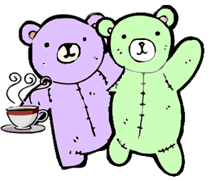

Taomar Menu
Breakfast
Awesome Avocado
A side of freshly carved heart-shaped avocado
Crazy Coffee with Cream
Coffee exclusively brewed at Dunkin Donuts with a mix of pumpkin flavor and cream
1
Cuteland Crepes
Crepes infused with cute by Michalrobokitty topped with freshly cut strawberries
Scrambled Quacks
Scrambled eggs with onions and sausage or
holy
secular bacon
2
Teddybear Toast
Teddy bear shaped toasted toast toasted by Michal's toaster oven
Lunch
Spoonful of Spoons
Many warm hugs shared between Michal and Rachel
3
Dinner
Carina Torta al Cioccolato
Chocolate cake with fudge frosting served with a swoon of vanilla ice cream
Cuddly Couscous
Miniature granules of innocent wheat fluffed to be devoured with love
Goatcheesey Bruschetta
Toasted bruschetta with diced tomatoes, onions, parsley and creamy goat cheesey
♥
1. May enable hyperactive hugging and rolling around on bed.
2. No actual quacks used or harmed.
3. May result in accidental nap or drooling.